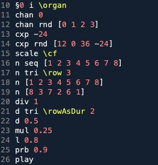
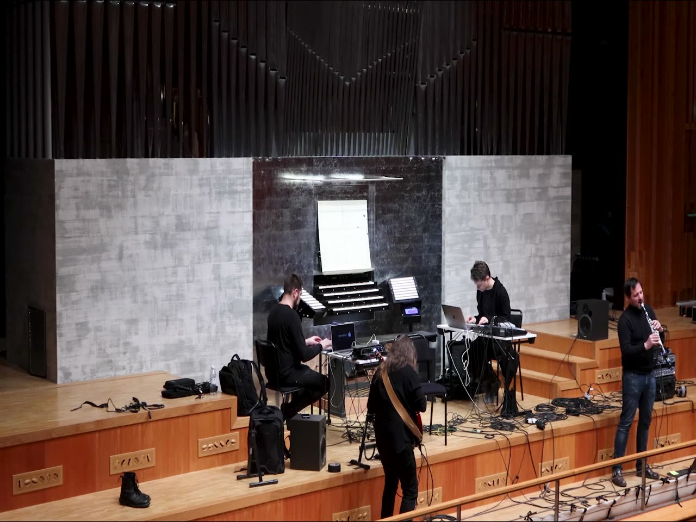
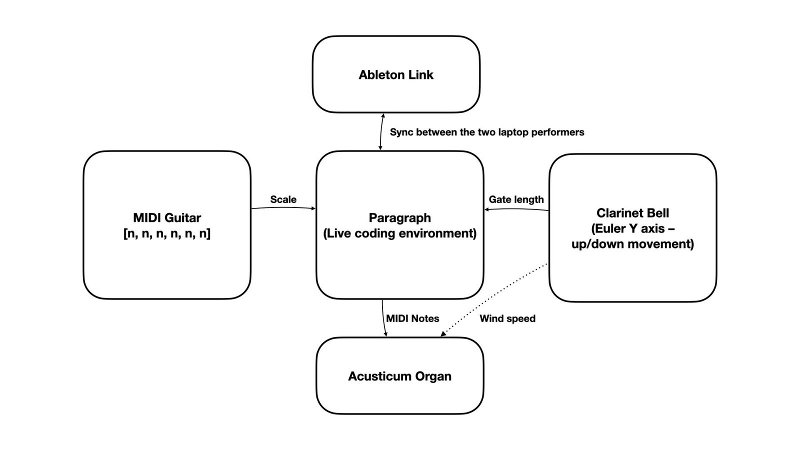
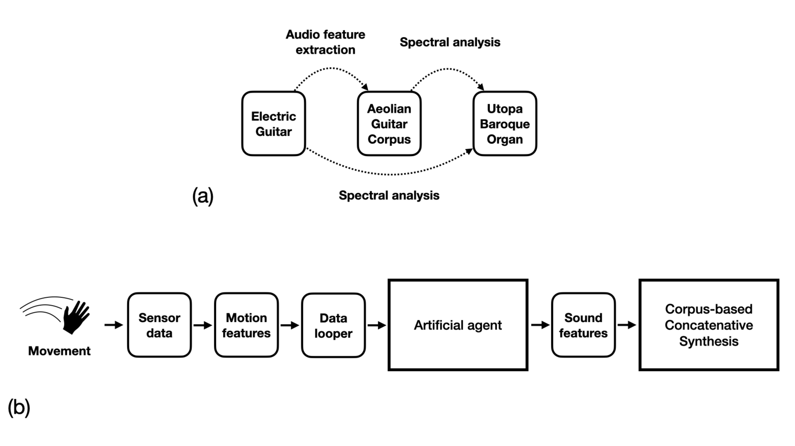
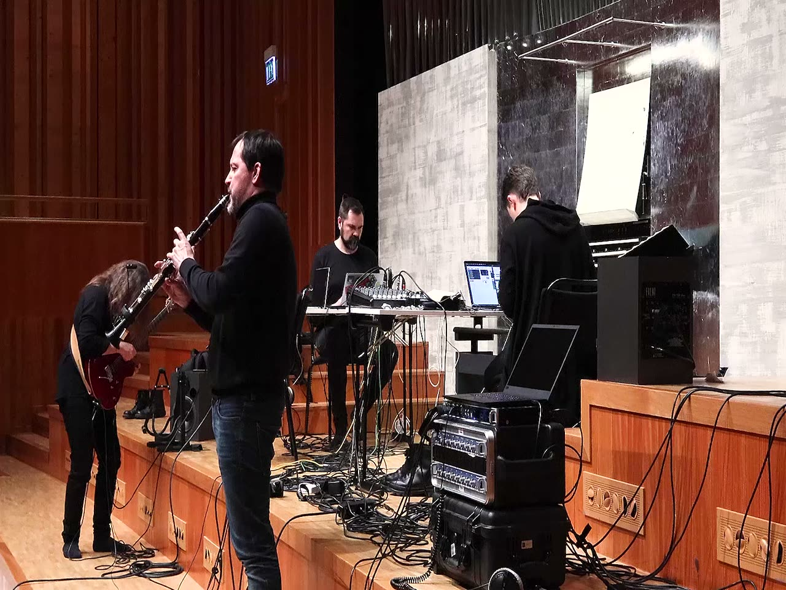
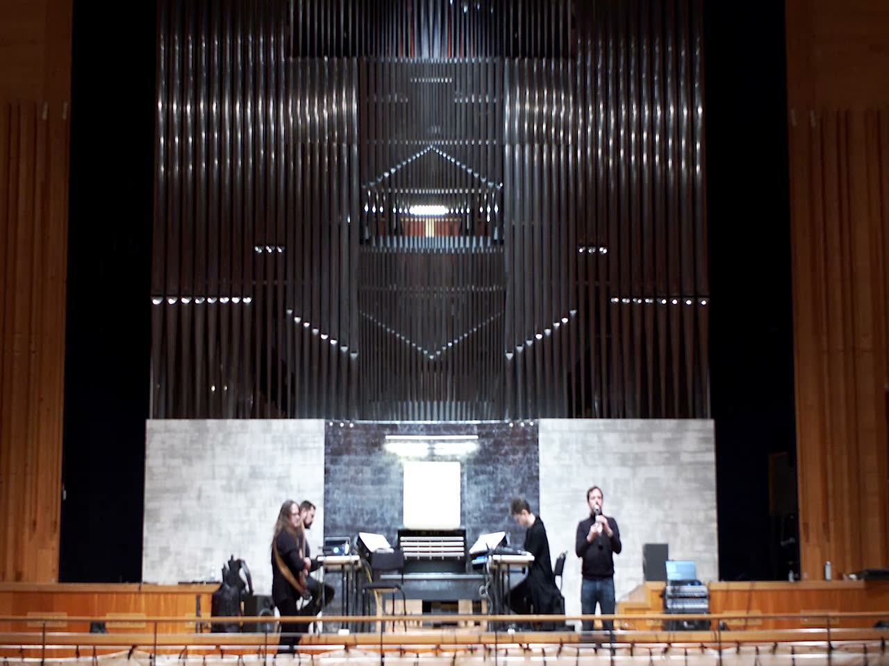
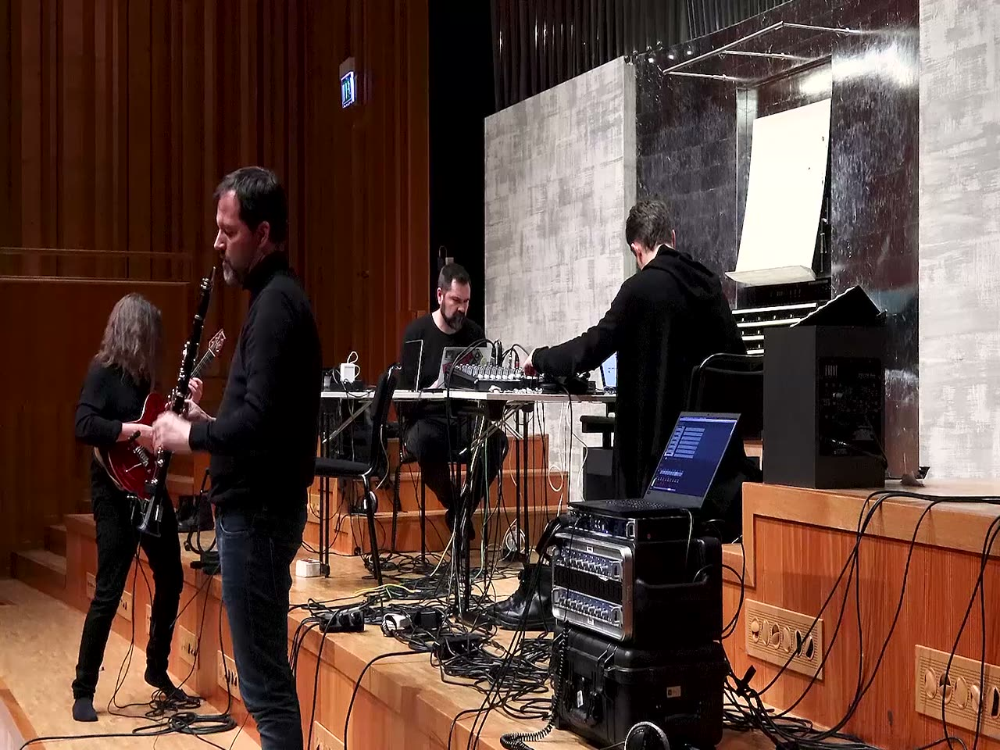
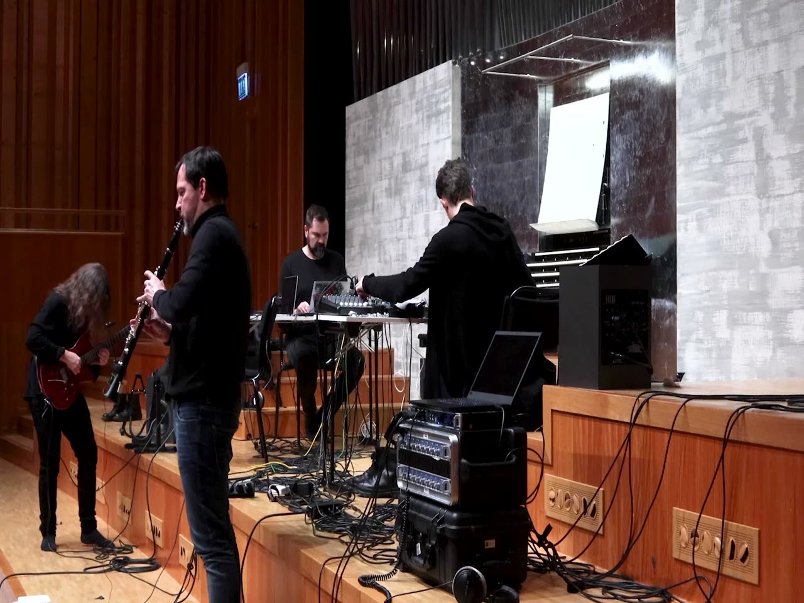

Global Hyperorgan: a platform for telematic musicking and research
Abstract
The Global Hyperorgan is an intercontinental, creative space for acoustic musicking. Existing pipe organs around the world are networked for real-time, geographically-distant performance, with performers utilizing instruments and other input devices to collaborate musically through the voices of the pipes in each location. A pilot study was carried out in January 2021, connecting two large pipe organs in Piteå, Sweden, and Amsterdam, the Netherlands. A quartet of performers tested the Global Hyperorgan’s capacities for telematic musicking through a series of pieces. The concept of modularity is useful when considering the artistic challenges and possibilities of the Global Hyperorgan. We observe how the modular system utilized in the pilot study afforded multiple experiences of shared instrumentality from which new, synthetic voices emerge. As a long-term technological, artistic and social research project, the Global Hyperorgan offers a platform for exploring technology, agency, voice, and intersubjectivity in hyper-acoustic telematic musicking.
Author Keywords
Global Hyperorgan, Hyperinstrument, Network performance, HCI, Live-coding, Assisted Interactive Machine Learning, AIML, Musicking, Telematic, Performance, Instrumentality.
Description
The Global Hyperorgan is an intercontinental, creative space for acoustic musicking. Existing pipe organs around the world are networked for real-time, geographically-distant performance, with performers collaborating musically through the voices of the pipes in each location.
CCS Concepts
Applied computing→Arts and humanities→Performing arts
Applied computing→Arts and humanities→Sound and music computing
Human-centered computing→Interaction design→Interaction design process and methods
Networks→Network architectures
Human-centered computing→Human-computer interaction (HCI)→Interaction techniques→Gestural input
Overview
The Global Hyperorgan networks existing pipe organs for real-time, telematic performance, with performers utilizing instruments or other input devices to engage through the pipes in each location. It is a long-term technological and artistic research platform for exploring issues of technology, agency, voice, and intersubjectivity in hyper-acoustic telematic musicking.
The initial phase of the project connects existing pipe organs in Sweden, the Netherlands and Canada to facilitate real-time musical interaction between physically distant participants without demanding the use of microphones or loudspeakers. The sonic experience in each location depends upon participants’ mapping strategies between their musical actions and the activation of pipes across the network.
The Global Hyperorgan’s affordances for intersubjective instrumentality emerge from the design constraints of the telematic system, including network latency and the asymmetric sonification capacities of the networked organs. Since the amount of latency and degree of jitter in any Global Hyperorgan performance is dependent upon geographic disposition and the bi-directional dynamics defined by the scenario, the system functions as a kind of 4th-dimensional organ, in which time becomes a scalable affordance, and thus readily affords certain parameters for musicking over others [1]. Additionally, the differing tonal dispositions of the pipe organs used for sonification at the nodes of a performance compel performers to contend with heterogeneous mappings between performance gestures and their sonic realizations across the network. Plans include the development of a generalized software interface for mapping acoustic realization among participating organs through defined semantic levels.
The initial phase of the project, 2020–22, explores the artistic and technological affordances of the Global Hyperorgan through a set series of interaction scenarios [2]. Each scenario establishes an oppositional framework for the relations between participants and the cybernetic capacities of the system from which to construct a performance: active vs. passive mediation, embodied versus disembodied agency, and human versus non-human actors. The discursive artistic process leading up to each event, the performance itself, and subsequent artistic artefacts will serve as laboratories for artistic, technical, and social research.
The present paper discusses a pilot study carried out by a quartet of performers in January 2021. Two pipe organs—the University Organ at Studio Acusticum in Piteå1, Sweden, and the Utopa Baroque Organ at Orgelpark2, Amsterdam—were connected telematically and controlled through MIDI and OSC protocols, using live coding, acoustic and digital instruments, and gesture controllers.
State of the Art
Telematic Performance
We understand telematic performance as the real-time interaction between musicians that are geographically dis-located, and that may involve both aural and visual communication. Technologies for telematic performance form the basis for networking and interaction among multiple hyperorgans, the core idea behind the Global Hyperorgan project. Recent research on networked musical instruments has outlined the possibilities of designing interconnected, distributed musical systems [3]. However, engaging in collective music making via telematic performance bears implications on musicking itself, modifying established practices and enabling new ones [4]. As observed by Roger Mills [3, p. 34], “while network technology collapses distance in geographical space, tele-improvisation takes place without the acoustic and gestural referents of collocated performance scenarios. This liminal experience presents distinct challenges for performers''. Even among collocated performers, the Global Hyperorgan affords a liminal experience of performed space, bridging geographical distance through collective, embodied navigation of indeterminate space.
Modularity
In a sense any musical instrument could be broken down into subsets of modules that exert agency over and network with one another. Some instruments even have the ability to transform while being played. Re-patching a modular synth or altering lines of code in a live coding environment during a performance holds the power not only to change the playability and idiomaticity of the instrument, but also compositional structures at the same time. Marije Baalman, in a comment on performing her piece Wezen-Gewording, observes how, for her “[i]t is hard to distinguish if a particular segment of code is part of the instrument, of the composition, or even the performance, or perhaps all of these at the same time” [4, p. 229].
In many ways a pipe organ resembles a modular synthesizer. The registers manifest fixed additive synthesis in which different oscillators are blended to create complex periodic waveforms. Selecting stops and directing wind to different sets of pipes is analogous to distributing control voltages around by means of patch cords in a modular system. Additionally, organs often include different kinds of mechanical filters and modulators such as wooden shutters and tremulants. Hyperorgans also include various protocols for types of interaction beyond the traditional organ console (e.g. OSC and MIDI). The inner modularity of the hyperorgan can therefore be expanded with new modules, human and non-human, and even other hyperorgans. Indeed, any hyperinstrument could be understood as a modular system, wherein the different extensions to the instrument allow for new kinds of interactivity and musical agency, but the concept of modularity is particularly useful when considering the artistic challenges and possibilities of the Global Hyperorgan.
The concept of interconnecting several modular systems together is of course well within the paradigm for such instruments. Early experiments include the work of the League of Automatic Composers at the Centre for Contemporary Music (CCM) at Mills College, Oakland, California. In the liner notes to a retrospective record spanning their work between 1978 and 1983, Tim Perkis and John Bischoff describe how they “approached the computer network as one large, interactive musical instrument made up of independently programmed automatic music machines” [5] cited in [3, p. 34].
In a project with violinist Bennett Hogg and flautist Sabine Vogel, Deniz Peters [8] observes how the interconnections between the members of the trio takes an almost physical shape and distributes control structures and affordances among them. Their respective instruments were connected by means of microphones, strings and transducer speakers, allowing for interaction with all instruments from all players. Acknowledging Philip Alperson’s elaboration of the relationship between performer’s bodies and their instruments as an achievement of intimacy rather than a material object in the hands of a musician [7, p. 46], Peters argues that “whenever an instrument is played by multiple performers, and when, also, its bodily extension is multiple, then a compound sound or even single sound as in the present example might become the result of a joint intentionality” [8]. He describes this as distributed or shared instrumentality, i.e. the notion of an added player as a “fourth, semi-autonomous voice [that] suggests that, next to the separate instruments, the interconnectedness of the instruments creates a new instrument—the one producing that very fourth voice” [8].
A Global Hyperorgan performance affords similar possibilities for shared instrumentality. In the next section we will examine the performance we recorded in January 2021 as an activation of a modular system.
System Design
To facilitate a stable and reliable connection for OSC and MIDI data between the two organs a VPN server was utilized. On both sides an application created by Wouter Snoei at Orgelpark enabled low-latency monitoring and timestamped messages to ensure proper timing.
The audio production was designed to differentiate the two instruments. Multiple microphones inside the organ in Piteå gave a highly detailed representation of this instrument. The second organ was captured with only a single stereo pair in the space in which it is located, and projected in the first space through a PA-system. Since all four performers were located near the playing console in the first space, their experience of the relation between the two instruments was similar to the aural image produced when mixing the recording.
Global Hyperorgan performance as a modular system


Fig. 1. Code excerpt from the live coding system.
To interact with the organs, one player used a newly developed live coding framework for faster and more intuitive interaction with SuperCollider’s pattern library. Written as a dialect on top of the regular SuperCollider syntax, the objective for the language was to be able to express musical ideas in a minimal but efficient way, as well as facilitate easy integration with hardware and other software.
Latency is an inherent feature of the act of live coding. The time it takes between designing musical ideas syntactically, executing the code block and finally hearing the result is a defining part of the instrument. For certain situations this latency between action and perception works fine and is possibly even beneficial. In other cases, such as in a free improvisation context, musicians’ ability to more immediately respond to events can be desirable but hard to achieve. One way to reduce the latency for the live coder is to map certain parameters to physical controllers or to use another performer’s live input, thus achieving more complexity with less typing. In this study, input from a MIDI guitar was used to define the scale for running arpeggiator-like patterns (see Video Excerpt 2). This constitutes an example of shared instrumentality [8] in the interaction design.

▶Video Excerpt 2
Many existing synthesizers incorporate devices affording automatic arpeggiation from sustained tones. Usually the player can choose between different modes, e.g. up, down, random, and some instruments even incorporate sequencers, offering more complex arpeggio patterns. In the interaction design of the pilot study (partly illustrated in Fig. 2), the live coder can write patterns of arbitrary length, using different algorithms to set combinations of singular or multiple note degrees quantized to the currently stored scale, derived from the guitar.


Fig. 2. System view from the perspective of the live-coder.
A second example of shared instrumentality can be drawn from the hyper clarinet (further described below). By using sensor data, sent wirelessly from the clarinet to the live coding system, other musical parameters could be decoupled from the typing interface of the live coder. As shown in Fig. 2, in this study the Euler Y-axis (i.e. the “pitch” angle) derived from the sensor was used to set the gate time for note events played on the organ, thus allowing the clarinetist to shape articulation by controlling the length of notes in the running patterns generated through live coding.
The laptop performer on the right of the organ console interacts with two modular systems. The first one—schematised in Fig. 3(a)—comprises a sound corpus of aeolian guitar recordings, the live audio signal coming from the electric guitar played by the guitarist, and the Utopa Baroque organ in Amsterdam. The connections between these three elements in the system are reconfigured live as explained in the following section and exemplified in Video Excerpt 3. The second modular system—schematised in Fig. 3(b)—consists of a wearable motion sensor, a data looper, an artificial agent in the form of a reinforcement learning algorithm [10], the “small” version of the FMA dataset [11] as a second audio corpus (8,000 tracks, 30 s each). This second system was dedicated to the creation of rhythmic patterns, some of which can be heard in Video Excerpt 5. This was done by recording a short hand gesture into a data looper. The looped motion data is then sent to the artificial agent, which arbitrarily maps it to the feature space of the FMA audio corpus. To adjust the mapping between motion data and sound features, the performer then gives positive or negative feedback to the artificial agent through a reinforcement learning procedure called Assisted Interactive Machine Learning (AIML) [10]. After a feedback message is received, the artificial agent slightly changes the mapping between recorded gesture and sound, thus changing the timbre of the rhythmic pattern resulting from the concatenative synthesis based fragments of the FMA audio corpus.


Fig. 3. Schematic representation of the modular systems used by the laptop performer sitting on the right of the organ console. (a) The first system, showing some of the possible connections that are being reconfigured live during the performance. (b) The second system used for the synthesis of rhythmic patterns using motion sensors, reinforcement learning, and concatenative synthesis.

▶Video Excerpt 5
The two laptop performers in the study were connected using Ableton’s Link system [12], allowing on-the-fly tempo changes and synchronized patterns. For practical reasons, a decision to use a fixed tempo during the performance was made. Local tempo changes could instead be achieved by means of clock dividers and multipliers, still referring to a global, synchronized clock.
Results

▶Video Excerpt 1
In this section, we describe some of the musical interactions resulting from this pilot Global Hyperorgan scenario.
In the very opening of the performance one can hear how the hyper clarinet controls the wind throttle by affecting both stops and adding a low cluster. This is achieved by detecting a static posture with low bell to trigger the selected actions. The low wind throttle value results in a lack of wind for the cluster to be fully realized. This binary state shift gives the effect of a more fluid interaction, thus shaping the sonic qualities of the live coded material (see Video Excerpt 1).
In the third performance excerpt, the interactions between guitar sound, live electronics, and the remote Amsterdam Organ are at the center of the performance. The audio signal from the guitar is used to activate a corpus of aeolian guitar recordings collected in several locations by the musicians. Through corpus-based concatenative synthesis (CBCS) [13] these recordings are divided into very short fragments, which are then analysed and used to synthesise new sounds, following the audio descriptors extracted from the guitar signal. This can be heard in Video Excerpt 3 between 0:09 and 0:20, when the sibilant timbres typical of the aeolian guitar follow the harmonics played on the electric guitars.

▶Video Excerpt 3
From 0:21 onwards, the sound obtained through CBCS is analysed further to track the ten loudest sinusoidal components and detect the MIDI notes that correspond to the closest pitch frequencies. This MIDI information is then sent via network to the Utopa Baroque Organ in Amsterdam, which responds with fast-moving glissandi in the higher register. These result from tracking the unstable sinusoidal components of the noisy spectra of the CBCS sounds. Once the audio output of the aeolian guitar corpus is removed, CBCS is used as a hidden means of adding complexity to how the organ responds to the clean flageolet harmonics of the guitar. These relationships between agencies are established and performed by the live electronics player sitting to the right of the organ console. In Video Excerpt 5, additional agencies and relationships are added to the system, in the form of a reinforcement learning algorithm used to find percussive samples in a large archive [10] as well as tempo synchronization between the resulting rhythmic patterns and the live coded parts played on the University Organ at Studio Acusticum.

▶Video Excerpt 4
In Video Excerpt 4 we find that the interplay within the system reveals not only a sense of shared instrumentality, but also the notion of an added fifth agent to the quartet, akin to Peters’ description of a fourth voice, above [8]. This agent was manifested through how the different timbral qualities of the two organs generated a variable perception of space, at once geographically heterogenous, but at times exhibiting an indeterminate homogeneity. The performers navigate this “indeterminate space”, shifting their listening in ways that transport them beyond the resonant body of the organ within their physical space, instead inhabiting a liminal perceptual and gestural presence. But rather than conceive of this phenomenon as an added player, as Peters observed in their trio performance, here, it becomes an indeterminate space that is neither between nor an amalgam of the two organ spaces, but a novel space affording new collaborative agency. While the trio performance discussed by Peters was enacted within a single physical space, an experience of copresence which potentially created the sense of a “fourth voice”, here, the performers’ navigation of an indeterminate auditory space compels a negotiation of hauptstimme and nebenstimme in the music generated by the two organs in two geographical and acoustic spaces.
Replacing the typical keyboard interface of the organ with a computer allows for further explorations of the physicality of the instrument and its inner workings. Certain vulnerabilities and affordances were discovered while, sometimes unknowingly, testing the limits of the MIDI implementation and the mechanics of different stops. An example can be observed towards the end of the performance, when the live coder played with the clock divider to generate very fast repetitions of chords (see Video Excerpt 5) which eventually caused the organ’s MIDI interface to crash, requiring the stops to be turned off manually.
The clarinetist used a clarinet fitted with a 9DOF sensor, effectively interconnecting multiple hyperinstruments into a single system. The modular concept forced the team to define how the hyper clarinet can be a part of the system and decide which parameters should be controlled. One key issue with this setup was how to transfer movement qualities [14] that could be meaningfully transformed into the interactions in the modular system.
Conclusions and future work
Understood as a modular system, the quartet becomes an example of how human and non-human agents can interact to form new and unexpected dynamic configurations.
The variable networking of agents and mediators are emblematic of the intersections of the technical, artistic and social at the heart of the Global Hyperorgan and illustrative of the thick and pervasive mediating dynamics endemic to all musicking [15]. In this sense, the Global Hyperorgan affords both a rich space for artistic production and offers a platform for research. As a cybernetic system bridging the digital and analog, it affords avenues for technological research into interfacing protocols, latency mitigation, software mediation and acoustic instrument design. Furthermore, the system’s capacities for hyper-acoustic collaboration within variable latency and sonification constraints invites novel opportunities for artistic research, as participants learn to contend with such constraints and embrace the opportunities they afford [1]. Global Hyperorgan participants are compelled to develop new models of instrumentality for new modes of musicking [16]. As demonstrated above, the modular system utilized in the pilot study afforded multiple experiences of shared instrumentality [8] from which new, synthetic voices emerge.
As a platform for social research, the Global Hyperorgan presents a verdant space in which to study the assemblage, stabilization and disruption of practice in telematic musicking. As the pilot study illustrates, it functions as a niche for the intersubjective construction of a habitat from which a collective voice emerges among participants [17]. Performers individually bring to bear their ecologies of practice within the habitat and collectively contend with shared instrumentality and navigate both discrete and indeterminate spaces, networking human and non-human agents and mediators into a musickal assemblage [18]. This fundamental sociality of the system offers opportunities for oligoptic examination of these assemblages [19] and invites ethnography of the creative process through the Tardean relations of imitation, opposition and invention [20].
Forthcoming studies will be built on method-development for multimodal data collection, carried out by the GEMM-cluster (see further [21]), and will thereby provide material for a more comprehensive analysis. This will, among other perspectives, allow for a further study of the perception of variable space in telematic performance. The overview and pilot study presented in this paper offer a glimpse of the Global Hyperorgan’s long-term potential for technological, artistic and social research. In the next scenario [2] the four performers will be divided in two duos in different locations, connecting through four hyperorgans, thereby providing different possibilities for interaction. Future scenarios will further develop the Global Hyperorgan as a platform for exploring technology, agency, voice, space and intersubjectivity in hyper-acoustic telematic musicking.
Footnotes
Further information about the University Organ at Studio Acusticum: https://www-cs-faculty.stanford.edu/~knuth/oa.html
↩Further information about the Utopa Baroque Organ at Orgelpark: https://www.orgelpark.nl/en/Informatie/Instruments/The-Utopa-Baroque-Organ
↩
Citations
- ↩Rofe, M., & Geelhoed, E. (2017). Composing for a Latency-Rich Environment. Journal of Music, Technology and Education, 10, 231–255.
- ↩Ek, R., Östersö, S., Visi, F. G., & Petersson, M. (2021). The TCP/Indeterminate Place Quartet: a Global Hyperorgan Scenario. In International Conference on New Interfaces for Musical Expression (NIME). Shanghai, China.
- ↩Turchet, L., Antoniazzi, F., Viola, F., Giunchiglia, F., & Fazekas, G. (2020). The Internet of Musical Things Ontology. Journal of Web Semantics, 60, 100548. https://doi.org/10.1016/j.websem.2020.100548
- ↩Schroeder, F., Renaud, A. B., Rebelo, P., & Gualda, F. (2007). Addressing the network: Performative strategies for playing apart. In In International Computer Music Conference (pp. 113–140).
- ↩Mills, R. (2019). Tele-Improvisation: Intercultural Interaction in the Online Global Music Jam Session. Springer.
- ↩Baalman, M. A. J. (2016). Interplay between composition, instrument design and performance. In Musical Instruments in the 21st Century: Identities, Configurations, Practices (pp. 225–241). Springer Singapore.
- ↩Perkis T, B. J. (2007). The League of Automatic Composers 1978–1983 audio recording (liner notes). New York Plutchik: New World Records.
- ↩Peters, D. (2016). Instrumentality as Distributed, Interpersonal, and Self-Agential: Aesthetic Implications of an Instrumental Assemblage and Its Fortuitous Voice. In Musical Instruments in the 21st Century: Identities, Configurations, Practices (pp. 67–78). Springer Singapore.
- ↩Alperson, P. (2008). The Instrumentality of Music. Source: The Journal of Aesthetics and Art Criticism (Vol. 66, pp. 37–51). Winter.
- ↩Visi, F. G., & Tanaka, A. (2020). Towards Assisted Interactive Machine Learning: Exploring Gesture-Sound Mappings Using Reinforcement Learning. In ICLI 2020 - the Fifth International Conference on Live Interfaces (pp. 10–19).
- ↩Defferrard, M., Benzi, K., Vandergheynst, P., & Bresson, X. (2017). FMA: A Dataset for Music Analysis. In 18th International Society for Music Information Retrieval Conference (ISMIR). Retrieved from https://arxiv.org/abs/1612.01840
- ↩Golz, F. (2018). Ableton Link – A technology to synchronize music software. Linux Audio Conference 2018, 39–42.
- ↩Schwarz, D. (2007). Corpus-based concatenative synthesis. IEEE Signal Processing Magazine, 24(2), 92–104. https://doi.org/10.1109/MSP.2007.323274
- ↩Alaoui, S. F., Caramiaux, B., Serrano, M., & Bevilacqua, F. (2012). Movement Qualities as Interaction Modality. In Proceedings of the Designing Interactive Systems Conference (pp. 761–769). Newcastle Upon Tyne, United Kingdom: Association for Computing Machinery. https://doi.org/10.1145/2317956.2318071
- ↩Born, G. (2013). Introduction - music, sound and space: transformations of public and private experience. In G. Born (ed.), Music, Sound and Space: Transformations of Public and Private Experience. (pp. 1–70). Cambridge University Press.
- ↩Braasch, J. (2009). The Telematic Music System: Affordances for a New Instrument to Shape the Music of Tomorrow. Contemporary Music Review, 28, 421–432. https://doi.org/10.1080/07494460903422404
- ↩Prior, D. (2017). The network as niche. Journal of Music, Technology and Education, 10(2–3), 289–303. https://doi.org/10.1386/jmte.10.2-3.289_1
- ↩Harlow, R. (2019). Ecologies of Practice in Musical Performance. MUSICultures, 45(1–2).
- ↩Latour, B. (2005). Reassembling the Social: An Introduction to Actor-Network-Theory (Clarendon Lectures in Management Studies).
- ↩Born, G. (2012). On Tardean relations: temporality and ethnography. In M. Candea (Ed.). Routledge.
- ↩Visi, F. G., Östersjö, S., Ek, R., & Röijezon, U. (2020). Method Development for Multimodal Data Corpus Analysis of Expressive Instrumental Music Performance. Frontiers in Psychology, 11.